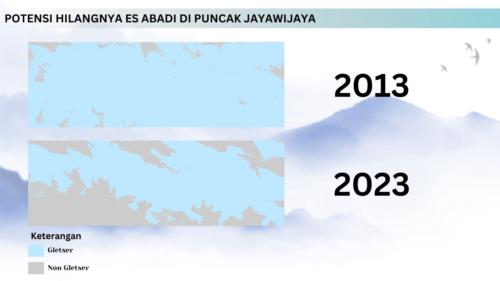

Potensi Hilangnya Es Abadi di Puncak Jayawijaya
Terdapat pengurangan sebaran gletser di Jayawijaya sejak 2013.

Dengan ketinggian mencapai 4.884 meter di atas permukaan laut (mdpl), Pegunungan Jayawijaya menjadi puncak tertinggi di Indonesia. Ketinggian ini menjadikan Jayawijaya masuk dalam "Seven Summits," yaitu daftar gunung tertinggi dari tujuh benua di dunia. Salah satu keunikan pegunungan ini adalah keberadaan lapisan gletser yang menyelimuti puncaknya, sebuah fenomena yang sangat langka di kawasan beriklim tropis seperti Indonesia. Gletser di daerah tropis, termasuk di Jayawijaya, menjadi indikator yang sangat sensitif terhadap perubahan iklim. Saat ini, keberadaan gletser tropis di dunia sangat terbatas, selain di Jayawijaya, hanya tersisa di beberapa lokasi di Amerika Selatan dan Afrika.
Namun, Peneliti Senior Biro Meteorologi BMKG, Donaldi Permana, memprediksi bahwa gletser di Jayawijaya akan mencapai kepunahan dalam rentang waktu 2025 hingga 2027. Prediksi ini berdasarkan hasil studi tahun 2020 yang menunjukkan bahwa peningkatan suhu akibat perubahan iklim telah menyebabkan hujan di kawasan tersebut tidak lagi berubah menjadi salju. Proses ini memicu pelelehan basal, yaitu pencairan gletser dari bagian dasarnya. Pelelehan ini disebabkan oleh permukaan sekitar gletser yang menjadi lebih gelap akibat berkurangnya lapisan es, sehingga menyerap lebih banyak radiasi matahari.
Peta di atas menunjukkan sebaran gletser di Jayawijaya tahun 2013 dan 2023. Pemantauan ini dilakukan dengan menggunakan salah satu indeks penginderaan jauh yaitu Normalized Difference Snow Index (NDSI) yang memanfaatkan Citra Landsat 8 dan beberapa saluran di dalamnya yaitu saluran tiga dan saluran enam. Terlihat bahwa terdapat pengurangan sebaran gletser yang signifikan antara tahun 2013 dan 2023. Pengurangan ini menunjukkan tren penurunan luas gletser yang konsisten dari waktu ke waktu. Peta ini juga memperlihatkan perubahan distribusi gletser, di mana lapisan es yang tersisa semakin terfragmentasi dan terbatas pada area tertentu.
Menurunnya sebaran dan jumlah dari gletser ini bukan semata-mata permasalahan biasa. Di mana melalui fenomena ini dapat diketahui bahwa perubahan iklim berdampak nyata. Gletser di Pegunungan Jayawijaya menjadi salah satu indikator paling jelas dari meningkatnya suhu global dan perubahan pola curah hujan yang disebabkan oleh aktivitas manusia. Lebih dari sekedar tanda peringatan, penyusutan gletser juga memberikan informasi terkait urgensi untuk mengambil langkah dalam menangani perubahan iklim. Hal ini termasuk pengurangan emisi karbon, perlindungan kawasan pegunungan, dan pelestarian lingkungan sebagai bagian dari komitmen global untuk menjaga keberlanjutan dari bumi kita.
Sumber
- The Cryosphere (Copernicus), 2018 (rujukan ambang batas NDSI)
- Kompas.com, Puncak Es Papua Akan Punah 2025–2027, Ketebalan Es di Puncak Jaya Tinggal 8 Meter
- Universitas Atma Jaya Yogyakarta (E-Journal UAJY), Bab 3 (PDF)
- Kompas.com, Kala Es Puncak Jayawijaya Semakin Menyusut
- Grid Kids, Memiliki Salju Abadi, Ini Fakta Unik Gunung Jayawijaya di Papua yang Memiliki Nama Lain Puncak Cartenz
- Ensiklopedia P2K Stekom, Puncak Jaya